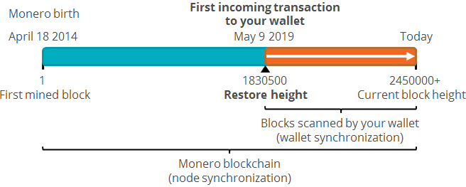
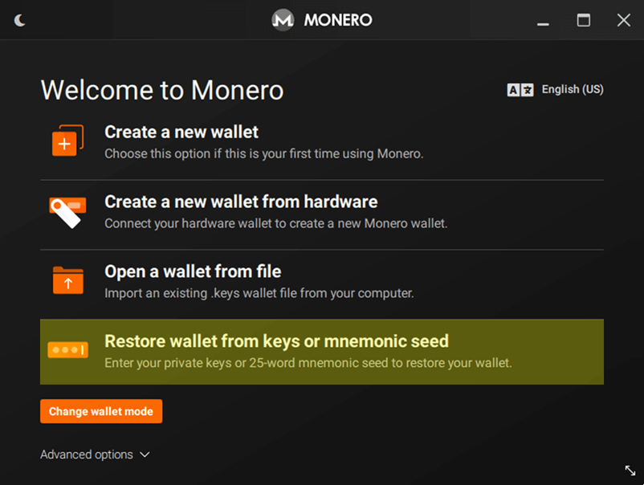
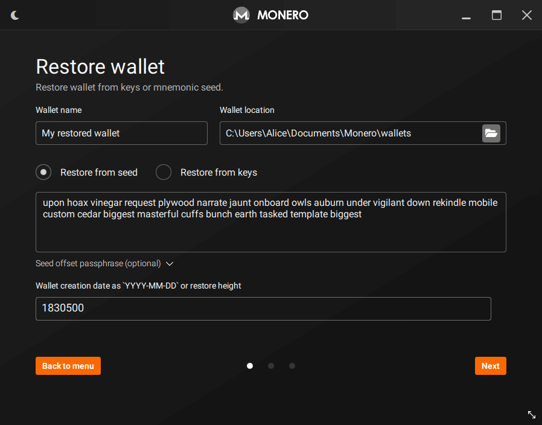
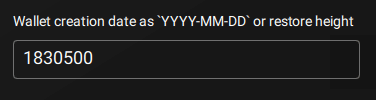
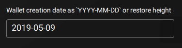
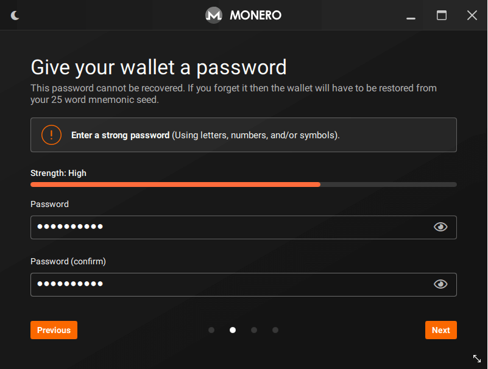
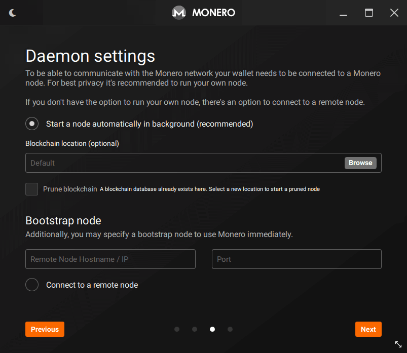
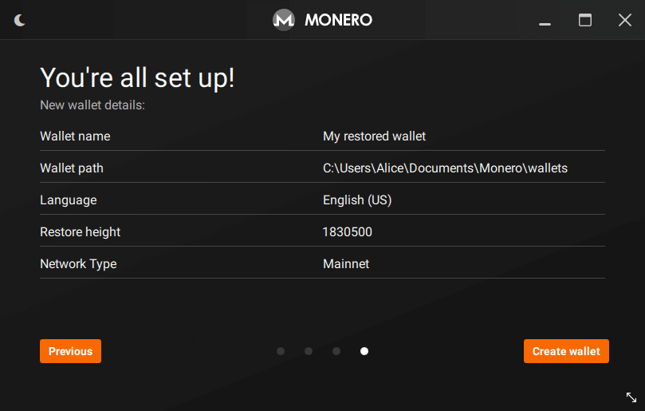

How to restore a wallet from mnemonic seed
Table of contents
When should I restore a wallet?
You should restore your wallet in the following situations:
- You lost access to your wallet (you forgot its password, your wallet file is corrupted or your device stopped working/is lost).
- You want to create a copy of your wallet on another device.
This guide will teach you how to restore a Monero wallet from its mnemonic seed.
If you want to restore a wallet from its private keys, please read this guide.
What is needed to restore a wallet from mnemonic seed?
A valid Monero mnemonic seed is a phrase with 13, 14, or 25 random words (multiple languages are supported). Your mnemonic seed has all the information needed to restore your wallet.
It is also useful to know your wallet restore height or the creation date of your wallet, since it makes your wallet synchronization faster.
Where can I find my mnemonic seed?
Most Monero wallets ask the user to write down a mnemonic seed on a paper backup when a wallet is being created. So it's up to you to remember where and how you stored your mnemonic seed.
Alternatively, if you still have access to the wallet being restored, you can usually find your mnemonic seed in a menu with some name like Seed, Keys, Secrets, or Master Private Key.
What is the wallet restore height?
The wallet restore height is a setting that tells your wallet software at which block height it should start scanning the blockchain looking for transactions. Ideally it should be the number of the block which included the first incoming transaction to your wallet.
If you set a restore height higher than the block height of your first incoming transaction, your wallet software will not detect all transactions of your wallet. In consequence, your balance will be wrong and your wallet software will not work properly.
If you set a restore height lower than the block height of your first incoming transaction, your wallet software will scan unnecessary blocks. In consequence, your initial wallet synchronization will take longer than necessary, but your wallet software will still work.
Therefore, if you're unsure about the block height of your first incoming transaction, it's always better to set a lower restore height instead of a higher one.

How to restore a wallet from mnemonic seed on Monero GUI
1) On the main menu, click on Restore wallet from keys or mnemonic seed.

2) The Restore wallet page will be displayed:

3) On Wallet name, enter the name of the wallet you want to create. You don't need to use the same name of the wallet being restored.
4) On Wallet location, choose where you want the wallet file to be saved.
5) Keep Restore from seed selected.
6) On the next field, type your 25 word mnemonic seed. It is expected that some mnemonic seeds have repeated words, as they work as a verification for errors (checksum).
7) Use the field Seed offset passphrase to enter your passphrase, if you have one. When you enter a passphrase, Monero GUI will use your mnemonic seed together with your passphrase to compute a new wallet.
8) The next field allows you to enter a Restore height. Even though this field is optional, it's not recommended to leave it blank, since setting a restore height makes your wallet synchronization faster. Ideally it should be the number of the block which included the first incoming transaction to your wallet:

Alternatively, you can also enter the date or an estimated date (YYYY-MM-DD format) of the first incoming transaction:

After entering your restore height, click on Next button.
9) On the next page, give your wallet a strong password and confirm it. Since your wallet will hold your private keys and seed, it is really important to enter a strong password.

10) If your wallet is in Advanced mode, the Daemon settings page will be displayed. Here you can choose whether you want to start a local node or connect to a remote node. Choose your desired option and click on Next button.

11) The next page will display a summary of the wallet you are going to restore. Click on Create wallet button to restore your wallet:

How to restore a wallet from mnemonic seed on Monero CLI
1) Open the terminal on your Monero CLI directory and run the following command:
-
Linux:
./monero-wallet-cli --restore-deterministic-wallet -
Windows:
monero-wallet-cli --restore-deterministic-wallet
2) Next, you will be asked for a wallet file name. Enter the name of the wallet you want to create and press Enter.
3) Monero CLI will then ask you to give your wallet a password and confirm it. Since your wallet will hold your private keys and seed, it is really important to enter a strong password.
4) Next, enter your 25 word mnemonic seed.
5) Next, Monero CLI will ask for a Restore height. Even though it is optional, it's not recommended to leave it blank, since setting a restore height makes your wallet synchronization faster. Ideally it should be the number of the block which included the first incoming transaction to your wallet. Alternatively, you can also enter the date or an estimated date (YYYY-MM-DD format) of the first incoming transaction.
6) After you have entered restore height, Monero CLI will then restore your wallet and start the wallet synchronization. Please be patient as this process may take a while. You will need to wait for it to finish before start using your wallet.
7) If you run into any trouble, running ./monero-wallet-cli --help will show you the options available to you at wallet startup. Once you're inside your wallet, running the help command will list the help for the commands available to you within the wallet.
My restored wallet is showing a wrong balance
This problem usually occurs when you set a restore height that is higher than the block height of the first incoming transaction to your wallet. To solve this issue, you will have to change the wallet restore height. Please read this guide for detailed instructions on how to do this.